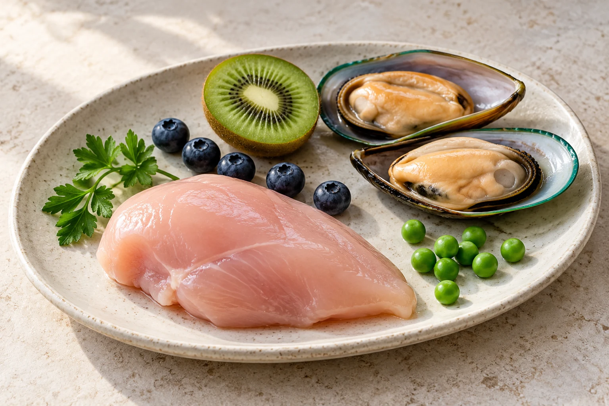
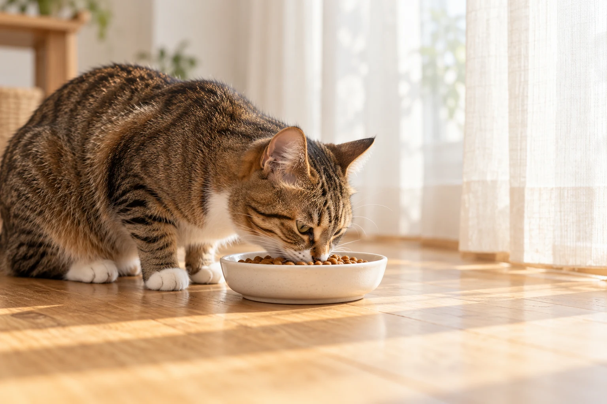
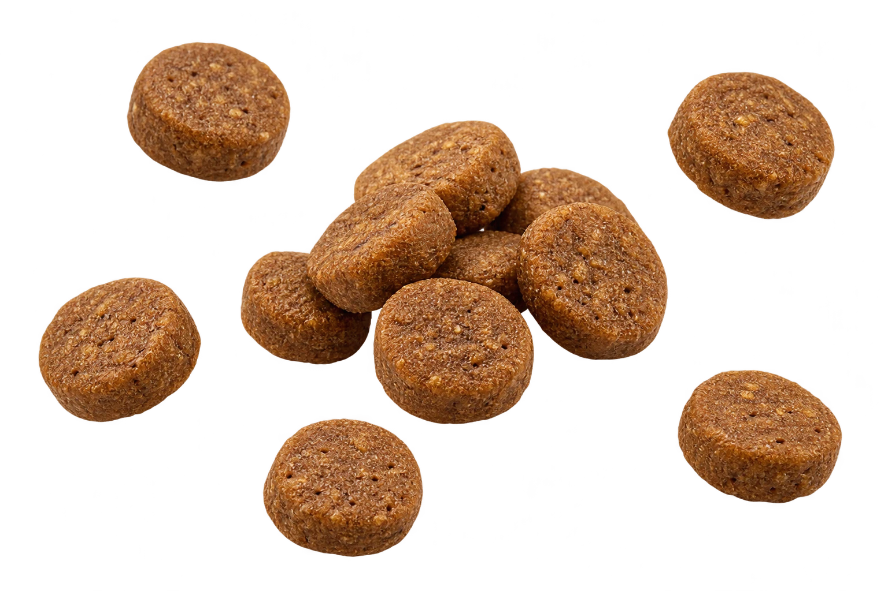
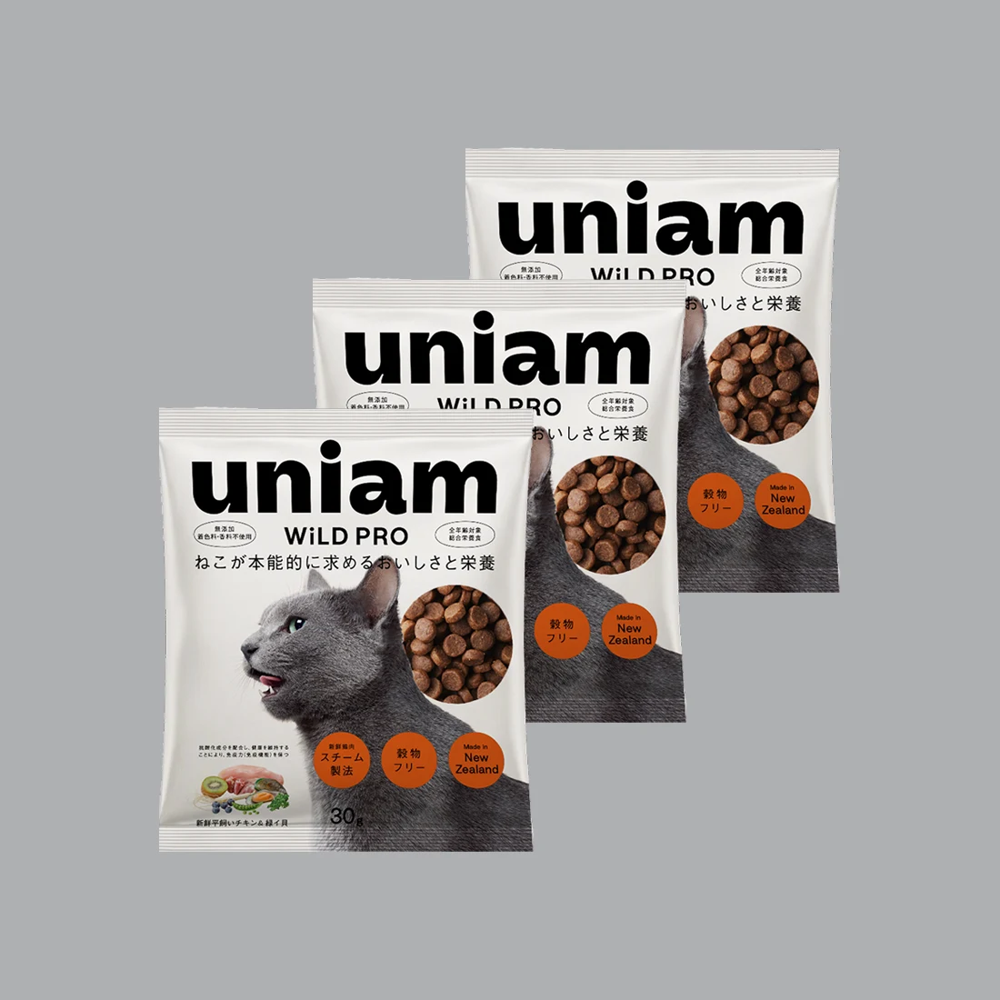

REAL INGREDIENTS
猫がよろこぶ、
生肉が主原料。
新鮮な平飼いチキンを中心に、緑イ貝や野菜、フルーツを組み合わせて。肉食の猫に向き合った、自然本来の食事バランス。

原材料のイメージNATURALLY WILD. ALWAYS LOVED.
そのひと粒に、愛情とサイエンス。
初回 30g × 3袋 980円（税込）・送料無料 定期便
01 / MADE FOR CATS
夢中で食べる横顔も、
食後にのんびり過ごす時間も。
ずっと大切にしたいから。
肉食動物である猫の食性を見つめ、
おいしさと栄養、その両方を考えました。
猫専門ヘルスケアブランド、UNIAMの
プレミアムドライフードです。

02 / INSIDE WILD PRO
猫の本能と、からだを想う3つのこだわり。
REAL INGREDIENTS
新鮮な平飼いチキンを中心に、緑イ貝や野菜、フルーツを組み合わせて。肉食の猫に向き合った、自然本来の食事バランス。

原材料のイメージSMALL BITES, BIG LOVE
食べやすさと吐き戻しに配慮した小粒設計。ビートパルプとチコリ根も配合し、毛玉の排出や腸内環境をサポートします。

フードのイメージ。実際の大きさとは異なります。GENTLY STEAMED
90℃のスチーム製法を採用。食材の栄養を生かしながら、豊かな風味を引き出します。毎日の「食べたい」につながるひと工夫です。
STEAM COOKED
∿ ∿ ∿03 / EVERYDAY WELLNESS
猫の健康を、毎日の食事から。
全年齢の猫のための総合栄養食です。
33%以上たんぱく質
366kcal100gあたり
AAFCOキャットフード栄養プロファイル（オールステージ）によって確立された栄養レベルを満たすように配合されています。
新鮮鶏肉（もも肉・胸肉・レバー・ハツ）、ディハイドレート鶏肉、丸ごとそら豆、キャッサバ由来デンプン、植物由来タンパク、鶏脂（オメガ6脂肪酸源）、丸ごとエンドウ豆、フィッシュオイル（オメガ3脂肪酸源）、加水分解タンパク（ビーフ、フィッシュ）、ビートパルプ（不溶性食物繊維源）、緑イ貝、酵母エキス、ディハイドレート七面鳥肉、チコリ根（水溶性食物繊維源）、グランドパセリ、ブルーベリー、キウイフルーツ、アミノ酸類（タウリン、DL-メチオニン）、ミネラル類（Cl、K、Na、P、Zn、Mg、Mn、Fe、Cu、I、Se、Ca）、ビタミン類（コリン、A、B1、B2、B3、B5、B6、B7、B12、C、D3、E、葉酸）、酸化防止剤（植物油から抽出したトコフェロール、天然クエン酸、天然酢酸）
04 / CAT PEOPLE'S VOICE
食いつき満足度 96%
uniam自社アンケート調査／2025.12.15〜2026.1.15／n=50。個人の感想であり、すべての猫の食いつきや効果を保証するものではありません。
「ワイルドプロはすごい
食いつきもいいし」
公式LP掲載の飼い主さまの声より抜粋
公式LPで体験談を読む05 / FIRST WILD PRO
うちの子のお気に入りに、なるかな。

初回 30g × 3袋 / 定期便
UNIAM公式の購入手続きへ進みます
キャンペーンは予告なく終了する場合があります。ご注文確定前に公式購入画面で最新の価格・お届け内容をご確認ください。
開封後も商品代金を返金。
はじめてのごはん選びをサポートします。
対象商品：WILD PRO。商品到着日より15日以内に公式お問い合わせフォームからご連絡ください。転売対策のため、開封済みの商品も中身をすべて捨てたうえで、パッケージの返送が必要です。返送時の送料はお客さま負担となります。郵送記録が残る形でご返送ください。
公式ページで詳細を確認おいしいね。
その毎日が、宝物。